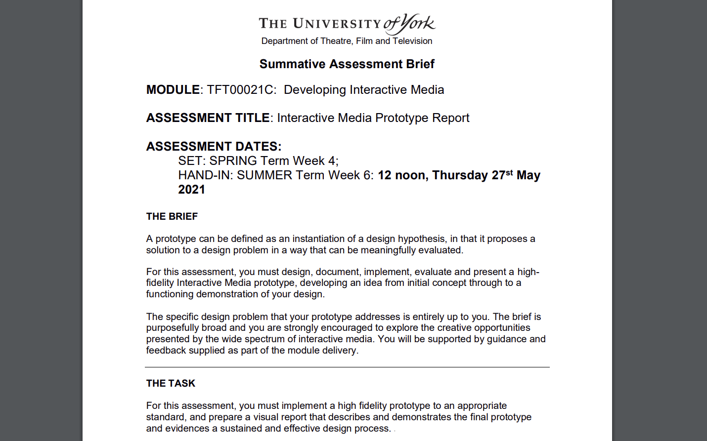
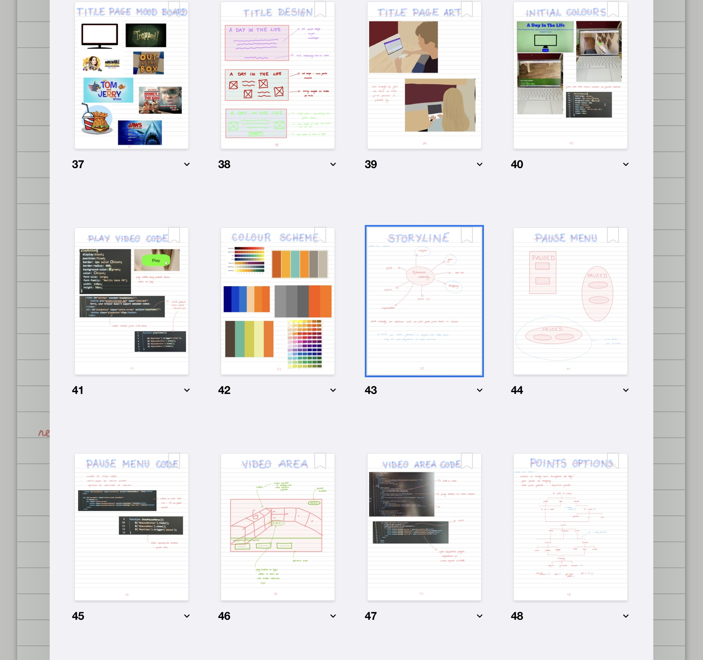
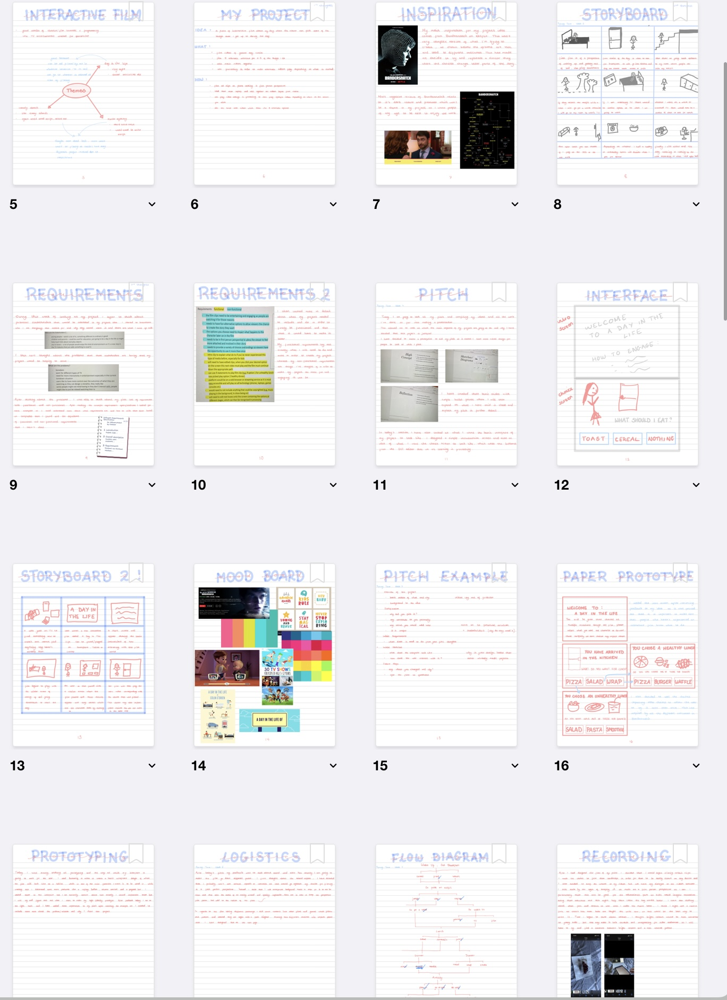

At the end of my first year at university we were tasked with creating the first design project of our own. Here we were given free reign to come up with an individual concept for a product and then take it through the design stages into a high fidelity prototype. Working on projects like this, amongst many other university projects, has also given me practise at working to a brief and hitting demands with my lecturers acting as a client. I believe that this experience working to briefs and hitting set targets will allow me to transfer to real world scenarios more easily.


After watching programmes such a Bandersnatch on Netflix, I took an interest in creating my own Interactive Films and Stories (which I am taking a further module on this year). I decided that I would create a 'Day In the Life Video' where the user would be able to pick what they do during a day and the choices they made would impact their end of year grades. This was also my first experience of creating a design logbook, I created over 100 pages where I noted down my design process, mood boards, mind maps and sketches. This logbook allowed me to keep track of what I was doing, develop sketches and ideas throughout the process and to make mood boards that would help inspire my end product.

To create my end product I decided the best way to make the high fidelity prototype would be using a website where by clicking on the different buttons, you are lead to different pages. This meant I could easily control the videos that would play as paths were selected, along with creating a pause screen so users can stop the video. I used a combination of HTML, CSS and JS to complete this prototype. With a longer time period I would have expanded the story tree and choices even further and come up with a more seamless way to display them.